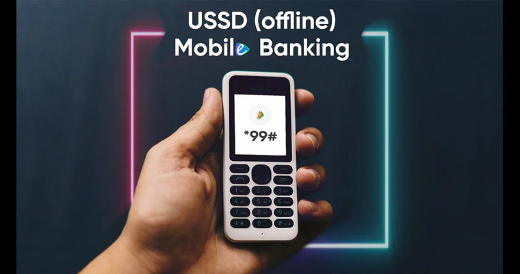

No-Frills Bank Accounts
No-Frills Bank Accounts, also known as Basic Savings Accounts, are specialised financial products designed to provide banking services to individuals with limited financial resources and low income.
Read MoreMicrocredit or Microloans
These loans are designed to help individuals kickstart or expand small businesses or address immediate financial needs. Microcredit has gained widespread recognition for its positive impact on poverty alleviation and economic development, particularly in underserved communities.
Read MoreUSSD Services
Mobile Banking and USSD (Unstructured Supplementary Service Data) Services represent a transformative approach to delivering banking services to individuals, especially those in remote areas or with limited access to traditional brick-and-mortar banks
Read MoreJan Dhan Yojana
.png)
Pradhan Mantri Jan Dhan Yojana (PMJDY), is a flagship government scheme in India that aims to promote financial inclusion and economic empowerment among the unbanked and underprivileged population
Read MoreMudra Yojana
.png)
Pradhan Mantri Mudra Yojana (PMMY) is a pioneering government initiative in India to support and empower small and micro-enterprises, particularly those operated by individuals from underprivileged backgrounds and marginalized communities.
Read MoreSelf-Help Groups
.jpeg)
Self-Help Groups are community-based organizations that play a transformative role in empowering underprivileged individuals, with a particular emphasis on women. These groups promote financial inclusion, savings, and microcredit, fostering economic self-sufficiency and social development at the grassroots level
Read MoreGovt. Welfare Schemes
.jpeg)
Government welfare schemes are a critical component of social development and poverty alleviation in many countries, including India.Banking services play a pivotal role in the efficient distribution of these government resources, ensuring that they reach the intended beneficiaries.
Read MoreFinancial Inclusion PO
.jpeg)
Financial inclusion in India is not limited to traditional banks; India Post, the country's postal network, plays a pivotal role in extending banking and financial services to underprivileged individuals, particularly in rural and remote areas.
Read MoreRural Banking
.jpeg)
Rural banking and cooperative banks are essential financial institutions that specialize in catering to the unique financial needs of individuals and communities in rural areas.
Read More